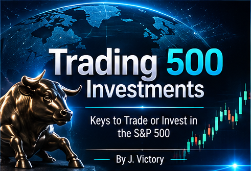
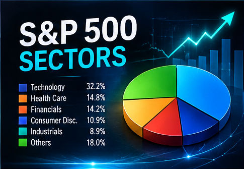
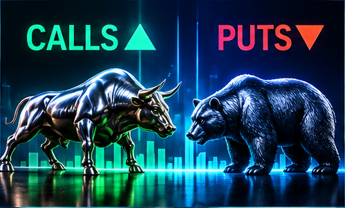
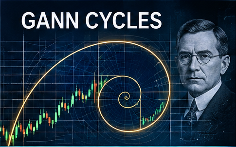
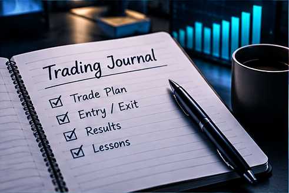
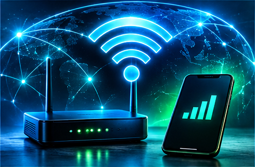

Return to Home
English
Español
Français

Keys to Trading and Investing in the S&P 500
What Is Trading 500 Investments?





Find Brokers Available in Your Region / Buscar Brokers en tu Región
-- Select Your Country / Selecciona tu País --
United States (USA)
Canada
México
Colombia
Argentina
Chile
Perú
Other Latin American Regions